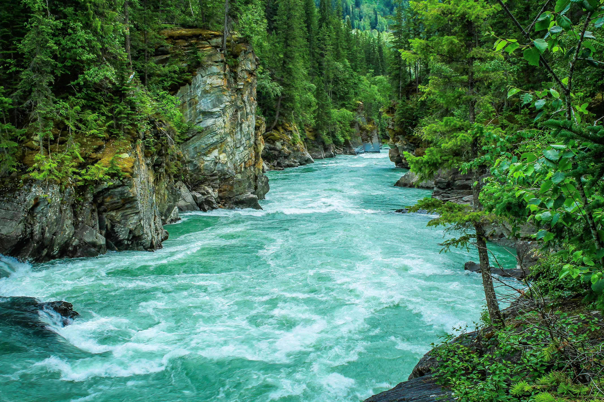
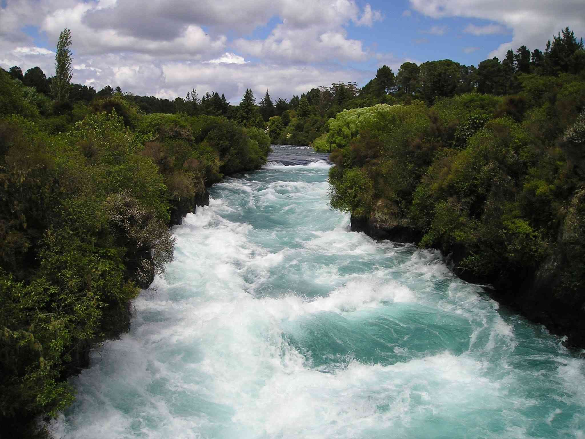

Rivers

Salmon River, Idaho
A crown jewel among all western rivers, the Salmon River tumbles wild and clear from the mountainous heart of Idaho to the Snake River, near the Oregon border. Undammed for 425-miles (except for a small weir in its headwaters), the “River of no Return” flows through the most remote country in the Lower 48. On the main-stem, 125 miles are designated wild and scenic, and 104 miles are designated on the Middle Fork.

Tully River, Australia
The Tully River hosted the International Rafting Federation’s 2019 World Rafting Championships. This world class river provides a pinnacle rafting experience, with over 45 rapids ripping down through the stunning rainforest gorge surrounds. Classified as a Grade 4/5 river, the Tully provides one hell of a wild ride which ticks all the boxes for those seeking the ultimate Australian rafting adventure.